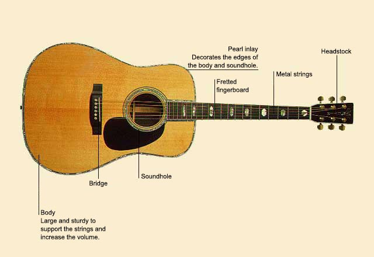

Guitar, Steel-String

A Steel-String Guitar is an acoustic guitar with steel strings. Many makes also have large bodies. This combination of features produces a louder, brighter tone than other acoustic guitars, such as a classical guitar. The steel-string guitar is ideal for playing blues, folk, and country music, either alone or accompanying a singer.
| Family |
| Strings |
| Pitch range |
| Over three octaves. |
| Material |
| Wood, with steel strings. |
| Size |
| About 3 ft 4 in-3 ft 6 in (1.02-1.07 m) long. |
| Origins |
| The steel-string guitar was developed in the 19th century, and came to be associated with the Martin Company in the USA. |
| Classification |
| Chordophone: an instrument that produces its sound by the vibration of strings. |
| And also... |
| In combination with the electric guitar, the steel-string guitar has been the major voice in popular music in the 20th century. The steel-string is largely responsible for making the guitar popular in the USA. |
